📋 Manual de Usuario
La herramienta permite registrar visitas a tiendas, evaluando áreas clave como operaciones, administración, producto, personal y KPIs, con planes de mejora.
- Gerentes Retail
- Líderes de zona
El objetivo es asegurar la calidad y consistencia en todas las tiendas.
Ingrese a la URL oficial del formulario desde navegador moderno: https://adocencuesta.com/retail/formulario
Antes de seleccionar país, zona o tienda, deberá seleccionar su correo de la lista desplegable.
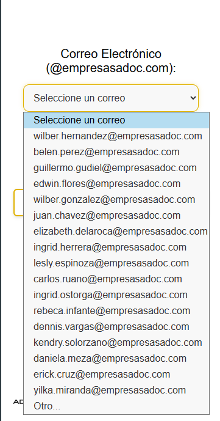En el caso de que no aparezca su correo, seleccione la opción Otro... debe de ser un correo válido de la persona que realiza la visita. Este correo debe ser del dominio @empresasadoc.com. Si se ingresa un correo diferente, el sistema no permitirá continuar con el formulario.

Seleccione la modalidad de la visita que va a realizar, puede ser Presencial o Virtual.
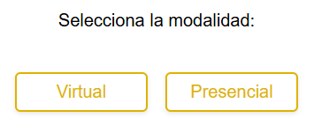Si selecciona la modalidad Virtual, no se solicitará el permiso de ubicación y no se validará la distancia a la tienda.
En el caso de las visitas presenciales: Al iniciar el formulario, se solicitará permiso para acceder a la ubicación. Es importante aceptar este permiso para validar la distancia entre la persona que realiza la visita y la tienda seleccionada.
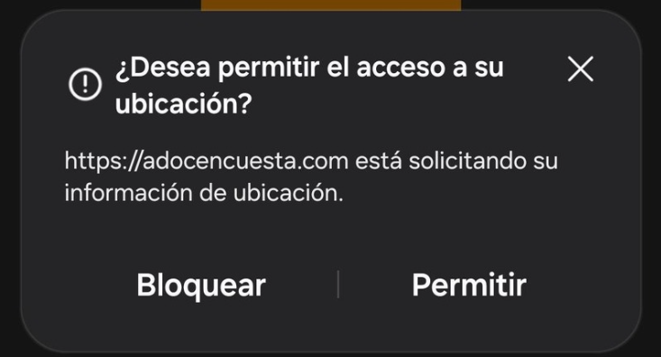- Se mostrará la distancia aproximada en metros desde la ubicación actual hasta la tienda.
- Si la persona se encuentra lejos de la tienda, se mostrará un mensaje de advertencia en la parte inferior del formulario. 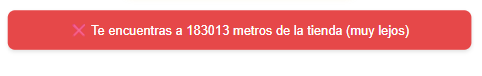
- Verifique que el GPS de su dispositivo esté activado.
- Si está activado, entonces apague el GPS y cierre el formulario.
- Espere unos segundos.
- Vuelva a encender el GPS y abra otra vez el formulario.
Paso 1: Seleccione el país.
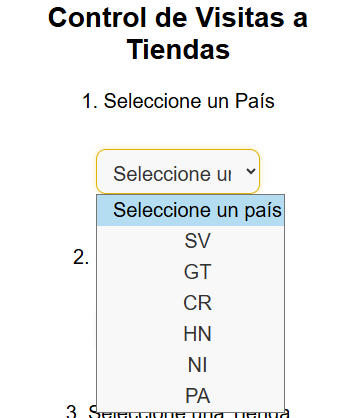Paso 2: Seleccione la zona.
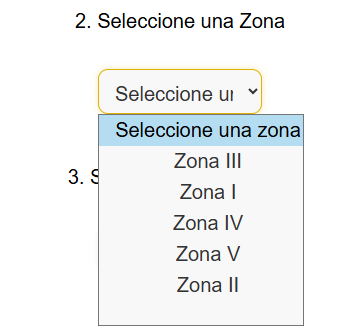Paso 3: Seleccione la tienda.
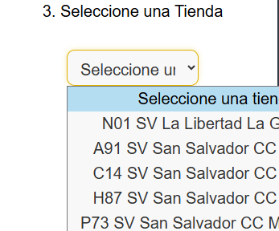Operaciones: Califique de 1 a 5, suba imágenes y agregue observaciones relevantes.
Administración: Igual que operaciones, pero enfocado en gestión administrativa.
Producto: Evalúe visibilidad, surtido y condiciones del producto.
Personal: Evalúe presentación, actitud y atención del personal.
En la sección de KPIs, hay dos campos obligatorios a responder.
Ventas vs Meta (% o valor): Ingrese el porcentaje de ventas alcanzado respecto a la meta establecida, pueden ser números negativos, en el caso que vaya bajo de la meta o números positivos si va arriba de está.
Selección: Seleccione si cumple o no con la meta.
En la sección de Planes de Acción, es obligatorio ingresar al menos un plan con su respectiva fecha y descripción del plan. Los planes adicionales son opcionales.
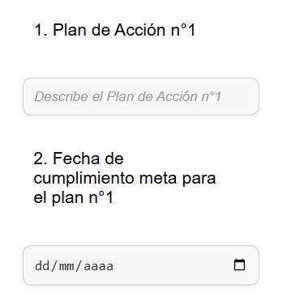En cada sección que permite imágenes, verás un botón para cargar archivos. Al hacer clic:
- Selecciona hasta 5 imágenes desde tu dispositivo. 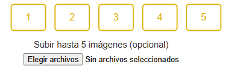
- Espera que se suban antes de continuar a la siguiente sección. 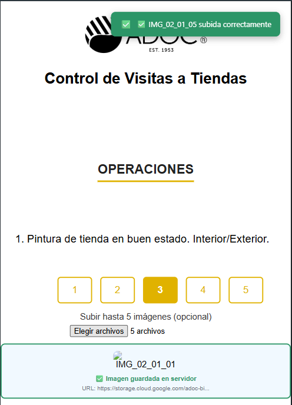
- Si alguna imagen no se carga, aparecerá un aviso en rojo en la parte superior derecha. 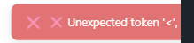
Puedes verificar que una imagen se cargó correctamente si se muestra una vista previa o el nombre del archivo al lado del campo.
Verificación: Asegurese de que reciba el mensaje de confirmación Formulario Enviado antes de salirse o cerrar la pestaña.
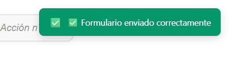- Suba imágenes nítidas, bien iluminadas.
- Use observaciones para explicar hallazgos.
- Sea claro con los compromisos en el plan de acción.
- Los KPIs permiten números negativos y decimales.